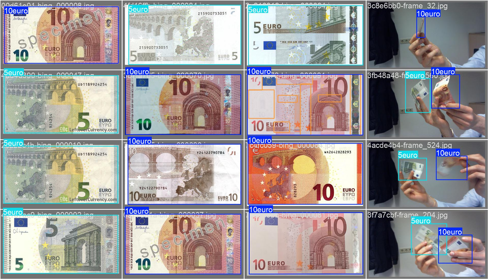
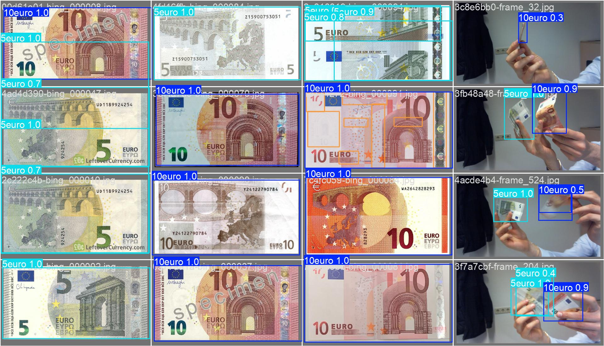

Training
graph LR
A[Data Acquisition]:::active --> B[Annotation];
B:::active --> C[Training];
C:::active --> D[Inference];
click A "../acquisition" _self
click B "../annotation" _self
click C "../training" _self
click D "../inference" _self
classDef active fill:#950f42Now that we have collected and annotated our dataset, it's time to train our very own YOLO model. This chapter will guide you through the complete training process, from setting up the configuration file to interpreting results and fine-tuning the model.
Preparation
Before we can start the training of the model, we need to get a few things done. Add the following files and folders to your project folder:
📁 yolo_training/
├── 📁 .venv/
├── 📁 rawdata/
├── 📁 annotations/
| ├── 📁 images/
| | ├── 📁 train/
| | └── 📁 val/
| └── 📁 labels/
| ├── 📁 train/
| └── 📁 val/
├── 📄 config.yaml
├── 📄 data_acquisition.ipynb
└── 📄 training.ipynb
Dataset Structure
In machine learning, datasets 📂 are divided into:
- Training Set (Train) → Used to teach the model by adjusting its parameters.
- Validation Set (Val) → Used to evaluate how well the model is learning.
- Test Set (Test) → Used to test the model after training.
Both the training and the validation set are passed to the training algorithm in advance. The model is then trained using the training set and then validated using the validation set. The results of the validation are then used to optimize the hyperparameters of the model. Furthermore, the results are saved and can be used for further analysis. We will look at this topic in more detail a little later. The test dataset is then used to test the performance of the model in real-world use. In our case, we will not use this data set and instead record new images via webcam to test the performance of our model in the inference chapter.

A typical split ratio which is used in the machine learning community is 80% for training and 20% for validation. We split our dataset by moving the images and the corresponding labels into the newly created train and val folders.
Splitting Images and Labels
It is important to note, that the images and labels need to be split in the same way. For example, if you want to use the image image_1.jpg for training, you need to copy the label image_1.txt in the trainging folder as well.
Configuration File
Now that we have the data in the correct structure, we can create a configuration file 📝 that tells YOLO where to find the dataset and how to train the model. This file contains the following information:
- Dataset paths – Where the images and annotations are stored.
- Class labels – The names of the object categories.
The easiest way to create the configuration file is to use the before created config.yaml file.
# Data
path: C:/path/to/your/yolo_training/annotations # path to your project folder
train: images/train # training images (relative to 'path')
val: images/val # validation images (relative to 'path')
#test: # test images (optional) (relative to 'path')
nc: 2 # number of classes
# Classes
names:
0: Class1 # Name of the Object # (1)!
1: Class2
- The class numbers are defined in the
notes.jsonfile from the annotation chapter. The Names (hereClass1andClass2) are arbitrary and can be chosen freely.
Task: Preperation
Adjust the configuration file for our specific project (Euro Note Detection) and your specific path structure
Training Process
Once we have our dataset and configuration ready, we can start training our own YOLO model. Therefore we will use the training.ipynb notebook.
Running YOLO Training
As with the use of pre-trained models, the training process is very simple and can be carried out with just a few lines of code.
from ultralytics import YOLO
# Load the YOLO model as a starting point
model = YOLO("yolov8n.pt") # Start with a pre-trained YOLOv8 model
# Train the model on the dataset
results = model.train(data="config.yaml", epochs=3)
Training will take some time, depending on the dataset size, the settings and the hardware. So it's time to go for a coffee or tea and come back later.

Interpreting the Output
While the training is running, you can see the progress in the terminal or right under your jupyter notebook code cell. The length of the output is quite long, so we will split it into parts.
Example: Training Output
1. YOLO Model and Configuration
Software & Hardware Information
New https://pypi.org/project/ultralytics/8.3.75 available Update with 'pip install -U ultralytics'
Ultralytics 8.3.74 Python-3.12.6 torch-2.3.0+cpu CPU (12th Gen Intel Core(TM) i9-12900)
- A newer YOLO version (8.3.75) is available, but you are using version 8.3.74.
- Python 3.12.6 and Torch 2.3.0 are being used.
- The model is running on CPU (Intel Core i9-12900). 🚀
💡 Tip: If training speed is slow, using a GPU (e.g., NVIDIA CUDA) would significantly improve performance. Therefore you need to install the CUDA driver, update PyTorch (CUDA Version) and change the YOLO settings to use the GPU (device=0).
Training Configuration
task=detect, mode=train, model=yolo11s.pt, data=config.yaml, epochs=3, [...], batch=16, imgsz=640, save=True
- task=detect → This is an object detection task.
- model=yolo11s.pt → Using the YOLO11s model (a lightweight version).
- data=config.yaml → Loading dataset configuration from
config.yaml. - epochs=3 → Training for 3 epochs (a very short training session; just for getting started).
- batch=16 → Processing 16 images per batch (each training step).
- imgsz=640 → Resizing images to 640x640 pixels.
✅ This is a short test run with just 3 epochs. Typically, models need 50+ epochs for better accuracy.
Model Architecture and Parameters
from n params module arguments
0 -1 1 928 ultralytics.nn.modules.conv.Conv [3, 32, 3, 2]
1 -1 1 18560 ultralytics.nn.modules.conv.Conv [32, 64, 3, 2]
[...]
YOLO11s summary: 319 layers, 9,428,566 parameters, 9,428,550 gradients, 21.6 GFLOPs
- Detailed information about the model architecture and each layer.
- 319 layers → The total number of layers in the neural network.
- 9.4 million parameters → These are the trainable weights of the model.
- 21.6 GFLOPs → Number of operations the model performs per second.
- Pretrained Weights: The model is using a pretrained YOLO11s model and transferring 493 out of 499 weights (If the number of classes in your dataset is different from the number of classes in the pretrained model, not all parameter groups may be transferred).
- Layer Freezing: Some layers are frozen (not updated during training), possibly to retain knowledge from the pre-trained model.
2. Dataset Information
train: Scanning [...] 301 images, 25 backgrounds, 0 corrupt
val: Scanning [...] 74 images, 3 backgrounds, 0 corrupt
- Training Set: 301 images, with 25 background images (images without objects).
- Validation Set: 74 images, with 3 background images.
- No corrupt images were found (which is good!). ✅
- The label distribution is being visualized in a plot (
labels.jpg).
3. Training Process
Training Overview
For each epoch, the model learns and improves.
Epoch GPU_mem box_loss cls_loss dfl_loss Instances Size
1/3 0G 1.03 2.892 1.36 39 640
2/3 0G 0.8623 1.327 1.188 47 640
3/3 0G 0.7538 0.9084 1.141 42 640
- Epoch 1/3 → Epoch 3/3: Training for 3 cycles over the dataset.
- box_loss (Bounding Box Loss): Started at 1.03 → Decreased to 0.75 (showing improvement).
- cls_loss (Classification Loss): Decreased from 2.89 → 0.90 (model is learning to classify objects).
- dfl_loss (Distribution Focal Loss): Decreased from 1.36 → 1.14 (better bounding box predictions).
- Instances per batch: Around 39-47 objects detected in each batch of training.
✅ Lower loss values = model is learning well.
Evaluation on Validation Set (After Each Epoch)
Metrics
We will look at the metrics in more detail a little later in the corresponding section. So don't worry if you don't understand the values in detail.
Class Images Instances Box(P R mAP50 mAP50-95)
all 74 98 0.707 0.642 0.672 0.468 (Epoch 1)
all 74 98 0.463 0.62 0.513 0.266 (Epoch 2)
all 74 98 0.914 0.852 0.941 0.717 (Epoch 3)
- P (Precision): Increased from 0.707 → 0.914 (better at correctly identifying objects).
- R (Recall): Increased from 0.642 → 0.852 (better at detecting all objects).
- mAP50 (Mean Average Precision @ IoU 0.5): Increased from 0.672 → 0.941 (high accuracy).
- mAP50-95 (More strict accuracy metric): Improved to 0.717 (good performance).
✅ This shows the model improved significantly by the 3rd epoch.
4. Final Results & Model Saving
Training Summary
3 epochs completed in 0.088 hours.
Optimizer stripped from runs\detect\trainX\weights\last.pt, 19.2MB
Optimizer stripped from runs\detect\trainX\weights\best.pt, 19.2MB
- Training took 0.088 hours (~5 minutes).
- Saved model weights:
last.pt→ Model at the end of training.best.pt→ Model with the best performance.
Running evaluation on the best model
Metrics
Again, we will talk about the metrics in more detail in the corresponding section.
Class Images Instances Box(P R mAP50 mAP50-95)
all 74 98 0.915 0.856 0.943 0.718
10euro 48 54 0.977 0.792 0.923 0.706
5euro 39 44 0.853 0.92 0.962 0.73
So, how can we read this? In the following, we will focus on the results of all classes and look at the metrics one by one and interpret them.
- Precision (P = 0.915) → 91.5% of detected objects were correct.
- Recall (R = 0.856) → 85.6% of actual objects were detected.
- mAP@50 (0.943) → 94.3% accuracy at a basic IoU level (good performance).
- mAP@50-95 (0.718) → 71.8% accuracy with stricter evaluation.
Class-Specific Performance:
- 10€ Note: Precision 0.977, Recall 0.792, mAP50 0.923.
- 5€ Note: Precision 0.853, Recall 0.920, mAP50 0.962.
Conclusion:
- The model is performing very well!
- The 5€ note is slightly easier to detect than the 10€ note (higher recall).
- Further fine-tuning could improve results.
5. Speed Analysis
- Preprocessing Time: 0.4ms per image.
- Inference Time: 70.7ms per image (object detection time).
- Post-processing Time: 32.6ms (final adjustments).
💡 This means the model takes about ~100ms per image → ~10 FPS on CPU (slower than GPU).
Training Settings
There are many different training settings available to tune the model's learning process. You can explore all options in the YOLO documentation.
Below are some key settings that significantly impact training:
| Setting | Default | Description |
|---|---|---|
| epochs | 100 |
Number of times the model will pass through the entire training dataset. More epochs allow the model to learn better but take longer to train. Example: epochs=50. |
| batch | 16 |
Number of images processed in each training step. A higher batch size can speed up training but requires more memory. Example: batch=16. |
| imgsz | 640 |
Input image size for training. Larger sizes improve accuracy but increase computation time. Example: imgsz=640. |
| device | "cpu" |
Specifies where to run the training. "cpu" for a regular processor or 0 to use a GPU (which is much faster). Example: device=0. |
💡 Tip: If training is slow, try reducing imgsz or batch.
Detour: Metrics
Before fine-tuning our model, we need to understand metrics - the key numbers that tell us how well our model is performing. These metrics help us analyze errors, optimize training, and improve detection accuracy. When training a model, we need to constantly evaluate the performance. This is done by using different metrics. YOLO typically uses the following metrics:
| Metric | Meaning | Goal |
|---|---|---|
| Loss | Measures how much the model's predictions differ from the actual labels. | Minimize |
| Precision | Of all the detections, how many were correct? | Maximize |
| Recall | Of all the objects that should have been detected, how many were found? | Maximize |
| mAP (mean Average Precision) | A combined measure of precision & recall over all object classes. YOLO will calculate different mAP (@50, @50-95, @75, @95) for different IoU thresholds. | Maximize |
The metrics and the combination of them are crucial to understand the performance of the model. Especially the mAP is a good indicator for the performance of an object detection model.
Combined Interpretation of Metrics
- High Precision, Low Recall: Model is careful but misses some objects.
- High Recall, Low Precision: Model detects many objects but makes mistakes.

💡 A good YOLO model should have high precision, recall, and mAP.
Training Results
Now that we have a good understanding of YOLO metrics, let’s dive deeper into how to interpret the training results. After each training run, YOLO creates a folder inside runs\detect (e.g., train). This folder contains multiple files and visualizations that help us analyze the performance of our model.
Model Weights
The weights folder contains the saved model weights from training.
best.pt: The best model based on validation performance. (Model with highest accuracy)last.pt: The final model at the end of training. (most recently trained model = last epoch)
Confusion Matrix
🔎 What does it show?
- The confusion matrix (
confusion_matrix_normalized.pngorconfusion_matrix.png) helps us understand misclassifications by showing the relationship between actual and predicted classes. - Each column represents the true class, and each row represents the predicted class.
- A perfect model would have all values on the diagonal (everything correctly classified).
- If there are many off-diagonal values, the model is making classification errors (e.g., mistaking
5€for10€).
-
We want:
- High values on the diagonal = Good model performance.
-
We don't want:
- Many off-diagonal values = The model is confusing some classes. Consider improving data quality or fine-tuning.
Label Distribution
🔎 What does it show?
The image labels.jpg shows:
- Upper left: The distribution of object labels in the dataset. How often each class appears.
- Upper right: Overlay of all bounding boxes on the image.
- Lower left: 3D Histogram of bounding box center coordinates.
- Lower right: 3D Histogram of bounding box width and height.
-
We want:
- Balanced dataset = The model can learn all classes equally well.
-
We don't want:
- Some classes appear much less frequently = Model may struggle with those objects.
Training Batch
🔎 What does it show?
The image train_batch0.jpg represents an input example and shows:
- Sample images from the training dataset, including applied augmentations like rotation, scaling, and flipping.
- This helps the model generalize better and avoid overfitting.
-
We want:
- If bounding boxes are correct, the annotations are likely fine.
-
We don't want:
- If bounding boxes look incorrect or missing, check your annotations.
Validation Predictions
| Ground Truth (Labels) | Model Predictions |
|---|---|
|  |  |
🔎 What do they show?
- Left (
val_batch0_labels.jpg): The correct bounding boxes (ground truth labels). - Right (
val_batch0_pred.jpg): The model’s predictions after training.
-
We want:
- Bounding boxes match well = Model is learning correctly.
-
We don't want:
- Bounding boxes are missing or wrong = Model might need more training or data improvements.
Resulting Metrics
The results.png file tracks key metrics across all epochs (training cycles). This image is very useful to understand the performance of the model over time and can be used to define the further training process.
🔎 What does it show?
Training & Validation Losses
train/box_loss&val/box_loss: Measures how accurately the model predicts object bounding boxes. A decreasing trend indicates improved localization.train/cls_loss&val/cls_loss: Represents the classification loss, showing how well the model differentiates between object classes. A lower value suggests better class predictions.train/dfl_loss&val/dfl_loss: The distribution focal loss helps refine bounding box predictions. A decreasing loss means improved precision in object localization.
Metrics
metrics/precision(B): Precision measures the proportion of correctly predicted objects among all detections. A higher value means fewer false positives.metrics/recall(B): Recall indicates how many actual objects were detected. A higher recall means fewer false negatives.metrics/mAP50(B): The mean Average Precision at IoU 0.5 evaluates overall detection performance. A higher value reflects better accuracy.metrics/mAP50-95(B): The mAP averaged over multiple IoU thresholds (0.50 to 0.95) provides a more comprehensive evaluation of the model’s performance.
-
We want:
- Loss decreases steadily = The model is learning well.
- Metrics increase = The model is detecting more objects correctly.
-
We don't want:
- Loss stays high or fluctuates a lot = Model might be struggling (check learning rate or dataset quality).
- Metrics stay low = The model is not learning well.
Interpreting the Results
So let's get back to our Euro note  example and interpret the results. In the
example and interpret the results. In the results.png file, we can analyze the before described metrics and derive the following observations:
Observations
-
Training Losses (Box, Class, DFL) are Decreasing
- The box loss, classification loss, and DFL loss are consistently decreasing, indicating that the model is learning effectively and improving its predictions.
- ✅ This is a good sign - it means the model is adjusting weights correctly and optimizing performance.
-
Validation Losses (Box, Class, DFL) are Fluctuating
- The validation losses increase in epoch 2 but then decrease in epoch 3.
- ⚠️ This could indicate some instability in training, possibly due to a small dataset or high variance in validation samples.
- Further monitoring is required to ensure stability in later epochs.
-
Precision and Recall are Inconsistent
- The precision and recall values drop in epoch 2 but recover in epoch 3.
- This fluctuation suggests that the model might still be adjusting to the data distribution.
- ⚠️ If these values remain unstable in later epochs, you may need to fine-tune hyperparameters or use more training data.
-
mAP50 and mAP50-95 Initially Drop but Recover
- The mAP metrics (mean Average Precision) drop in epoch 2 and then increase significantly in epoch 3.
- ✅ This suggests that while there were performance fluctuations, the model eventually improved its object detection accuracy.
So what should we do now?
Since the model is still fluctuating, we should continue training for more epochs (10+), monitor validation loss closely, and adjust the learning rate if needed. Keep an eye on precision/recall stability!
Fine-Tuning the Model
To do so, we do not need to train the model from scratch again. We can continue training the model from the last checkpoint.
# Load the already trained model
model = YOLO('./runs/detect/trainX/weights/last.pt') # (2)!
# Resume training
model.train(data = 'config.yaml', epochs = 50) #(1)!
- We now continue training the model for 50 more epochs.
- In this case, we load the last model from the
trainXfolder.
After some time (or a lot of time depending on your hardware 🙈) our results should look like this:
This training run is significantly better than the previous one because:
- Losses are decreasing smoothly with no major fluctuations.
- Validation loss is following training loss, meaning the model is generalizing well.
- Precision, recall, and mAP are increasing steadily and stabilizing near 1.0, showing strong detection capabilities.
Monitor for overfitting
If validation loss starts increasing while training loss keeps decreasing, it might be overfitting. Consider adding data augmentation or early stopping if needed. Additionally, YOLO offers the training paramter patience to stop the training if the validation loss does not improve after a certain number of epochs (default is 100).
Things to Try
-
Increase the number of epochs:
- Try training for
100+epochs instead of50.
- Try training for
-
Use a larger YOLO model:
- Instead of
yolo11s.pt(small model), tryyolo11m.ptoryolo11l.pt(medium/large models).
- Instead of
-
Train on a larger dataset:
- More labeled images can significantly boost performance.
- Try adding more angles, backgrounds, and lighting conditions.
Next Steps
As already mentioned in the training results section, the best and the final model are saved in the best.pt and last.pt files.
We will use those models now for the inference and a real-world evaluation.